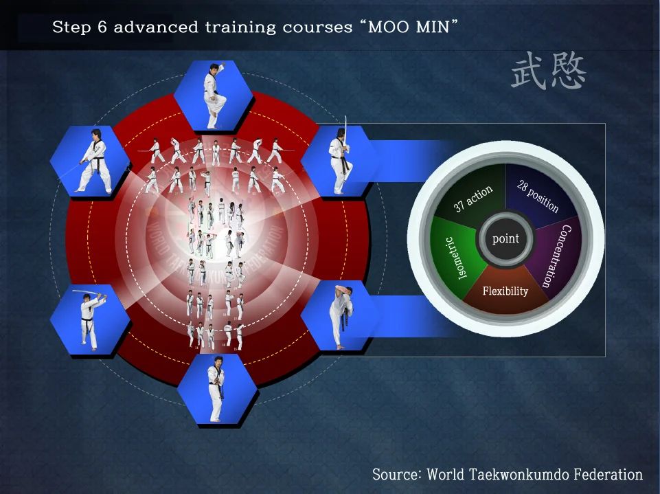
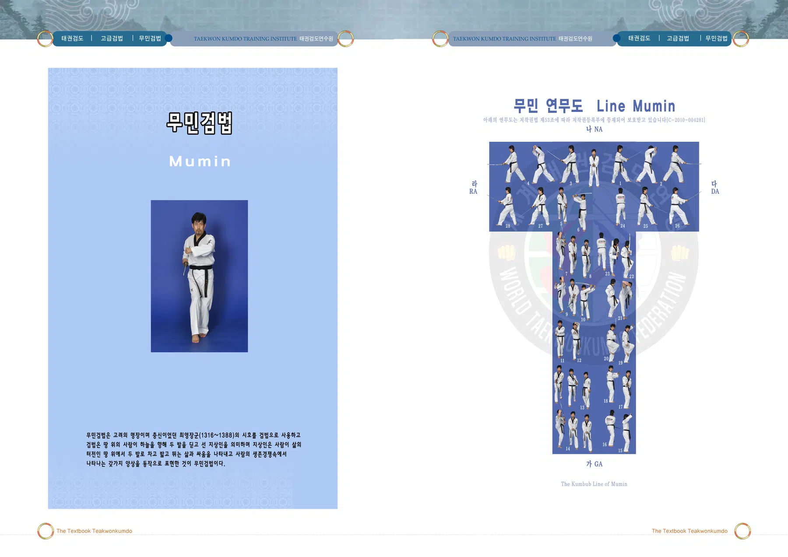
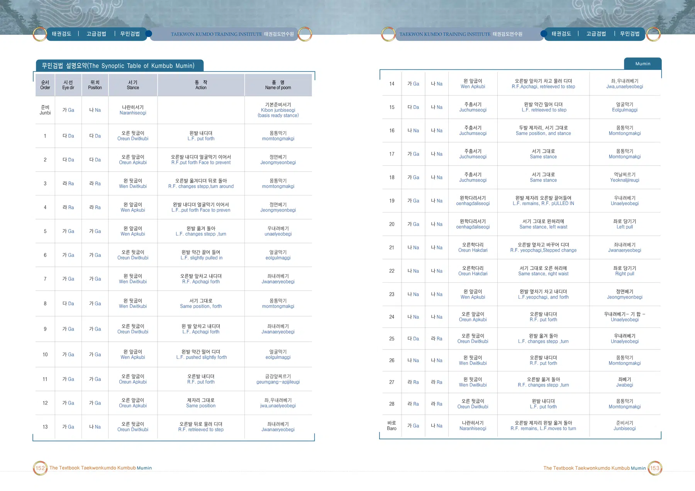
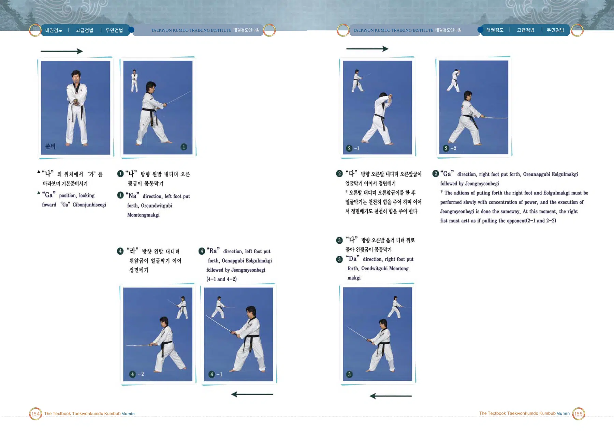
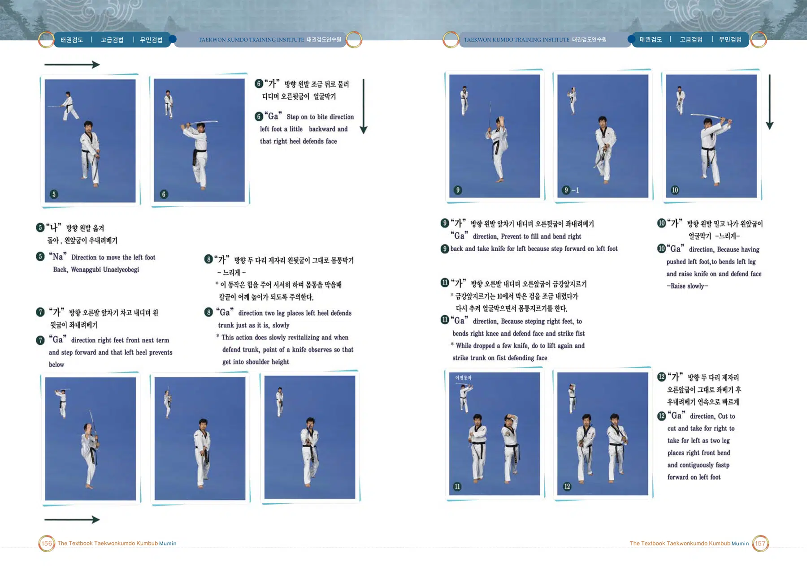
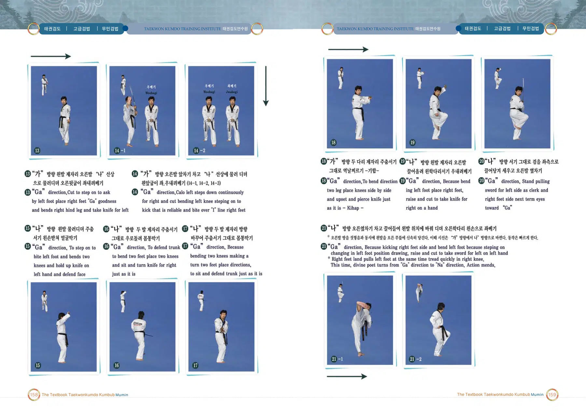
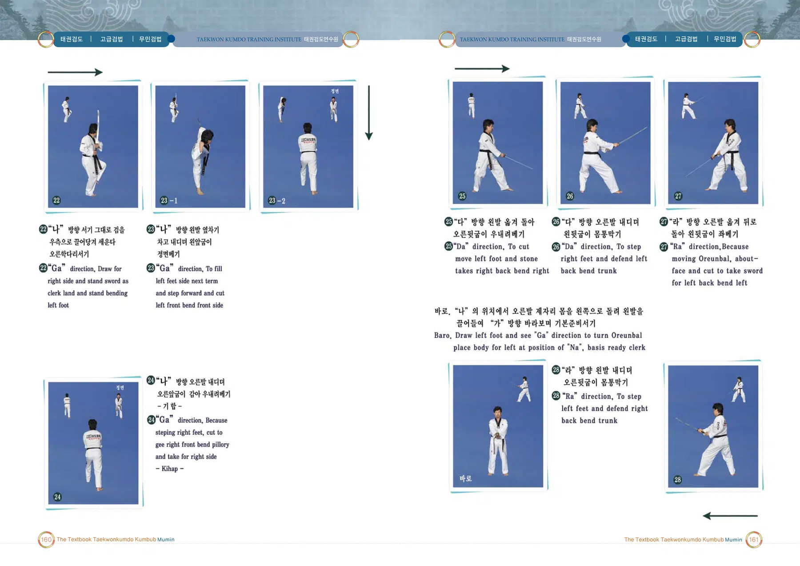

무민검법
최영 장군의 시호에서 이름을 따온 검법
출처: 태권검도 교본. 아래 설명은 제공된 초안의 뜻풀이 요약이며, 원문은 교본 이미지에서 확인할 수 있습니다.
무민검법의 뜻과 상징
고려의 명장 최영 장군의 시호를 명칭으로 사용한다. 땅을 딛고 살아가는 인간의 움직임과 생존의 모습을 표현하는 검법이다.
태권검도 교본 인쇄 270쪽의 설명을 바탕으로 요약한 해설입니다.
무민검법 표준 정의
무민검법은(는) 세계태권검도연맹의 태권검도 역사 인물 검법 교육체계에 속하는 검법이다. 고려의 명장 최영 장군의 시호를 명칭으로 사용한다. 땅을 딛고 살아가는 인간의 움직임과 생존의 모습을 표현하는 검법이다.
검법 체계 창시자: 전성권 · 출처: 태권검도 교본 270쪽 · 교육체계: 역사 인물 검법 9종
공식 연무도(검형)
무민검법 · 6단
이미지를 누르면 확대됩니다.

창시자 전성권 · 출처: 세계태권검도연맹(WTKF)
무민검법 교본 자료
이미지를 누르면 확대됩니다. 확대 화면에서는 좌우로 이동하여 동작과 설명을 확인하세요.





